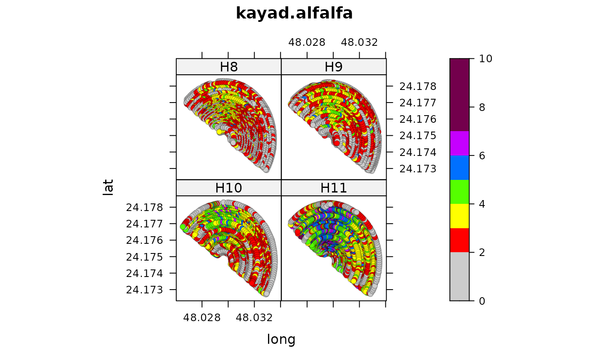

Yield monitor data for 4 cuttings of alfalfa in Saudi Arabia.
kayad.alfalfa.RdYield monitor data for 4 cuttings of alfalfa in Saudi Arabia.
Usage
data("kayad.alfalfa")Format
A data frame with 8628 observations on the following 4 variables.
harvestharvest number
latlatitude
longlongitude
yieldyield, tons/ha
Details
Data was collected from a 23.5 ha field of alfalfa in Saudia Arabia. The field was harvested four consecutive times (H8 = 5 Dec 2013, H9 = 16 Feb 2014, H10 = 2 Apr 2014, H11 = 6 May 2014). Data were collected using a geo-referenced yield monitor. Supporting information contains yield monitor data for 4 hay harvests on a center-pivot field.
# TODO: Normalize the yields for each harvest, then average together # to create a productivity map. Two ways to normalize: # Normalize to 0-100: ((mapValue - min) * 100) / (max - min) # Standardize: ((mapValue - mean) / stdev) * 100
Source
Ahmed G. Kayad, et al. (2016). Assessing the Spatial Variability of Alfalfa Yield Using Satellite Imagery and Ground-Based Data. PLOS One, 11(6). https://doi.org/10.1371/journal.pone.0157166
Examples
library(agridat)
data(kayad.alfalfa)
dat <- kayad.alfalfa
# match Kayad table 1 stats
libs(dplyr)
#>
#> Attaching package: ‘dplyr’
#> The following object is masked from ‘package:gridExtra’:
#>
#> combine
#> The following object is masked from ‘package:MASS’:
#>
#> select
#> The following object is masked from ‘package:nlme’:
#>
#> collapse
#> The following objects are masked from ‘package:stats’:
#>
#> filter, lag
#> The following objects are masked from ‘package:base’:
#>
#> intersect, setdiff, setequal, union
dat <- group_by(dat, harvest)
summarize(dat, min=min(yield), max=max(yield),
mean=mean(yield), stdev=sd(yield), var=var(yield))
#> # A tibble: 4 × 6
#> harvest min max mean stdev var
#> <fct> <dbl> <dbl> <dbl> <dbl> <dbl>
#> 1 H10 0 6.68 2.86 1.24 1.55
#> 2 H11 0 9.96 4.01 1.69 2.85
#> 3 H8 0 5.86 2.32 1.01 1.03
#> 4 H9 0.191 5.97 2.45 1.07 1.14
# Figure 4 of Kayad
libs(latticeExtra)
catcols <- c("#cccccc","#ff0000","#ffff00","#55ff00","#0070ff","#c500ff","#73004c")
levelplot(yield ~ long*lat |harvest, dat,
aspect=1, at = c(0,2,3,4,5,6,7,10), col.regions=catcols,
main="kayad.alfalfa",
prepanel=prepanel.default.xyplot,
panel=panel.levelplot.points)

# Similar to Kayad fig 5.
## levelplot(yield ~ long*lat |harvest, dat,
## prepanel=prepanel.default.xyplot,
## panel=panel.levelplot.points,
## col.regions=pals::brewer.reds)